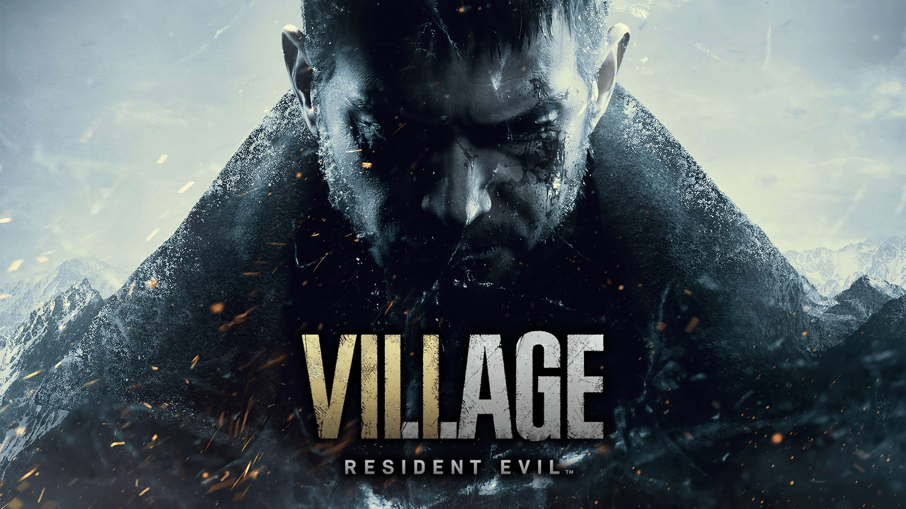
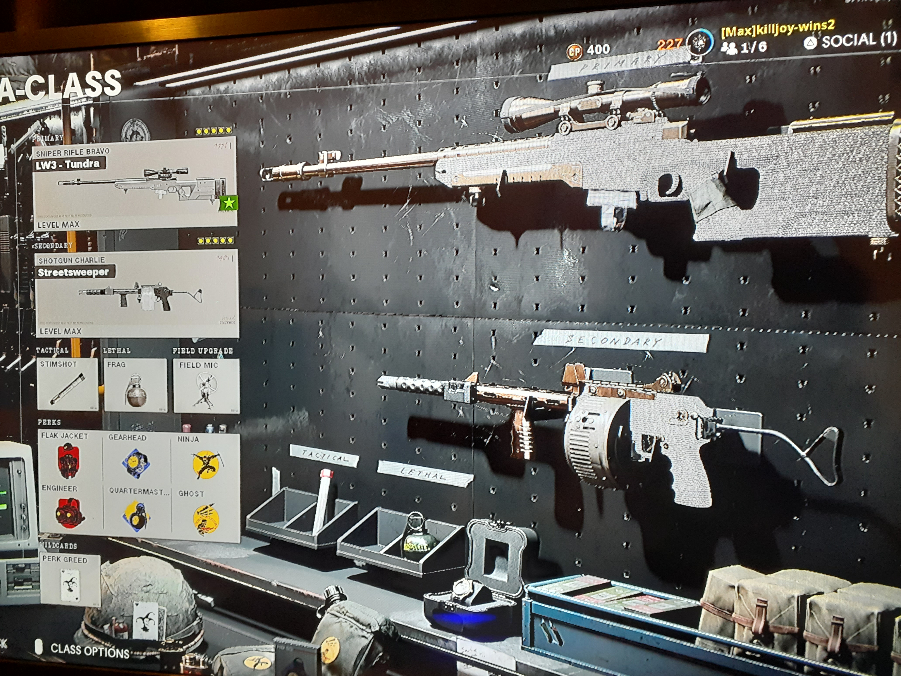

Video Game Reviews
Doom Eternal

I just played this game for the first time and immediately picked up the controls and had a great time.
It reminds me of the Halo 3 maps I created in Forge. It's got great platforming and FPS gunfights.
The gameplay loop is satisfying because you melee and chainsaw enemies to get your health back during explosive gunfights with multiple demons.
I know I was meant to play this game because Elam means Eternal and it's Doom: Eternal. It's also about demonslaying which is kind of what this website is all about.
I think this game is a no-nonsense shooter with awesome lore so if you take it for what it is it should be a 10/10 experience. All I did was immediately jump in and help my fried get past a couple boss fights or swarms.
10/10
Resident Evil Village
I just beat this game on hardcore on my first playthrough and it was one of the hardest games I've ever played. It was also the scariest. It definitely captured the magic of Resident Evil 4. Not quite as good but definitely very fun and a welcome addition to the series.
9/10
11/10
This is the greatest game of all time
When I was playing it for the first time, I remember thinking I didn't deserve it. I was so grateful for its quality and that I was alive to experience it that it made me appreciate life more. It's that profound. It's such a work of art that I'm happy to have came across it and it's easily the best video game ever. It will make you reevaluate what a video game is, and I have never been more attached to a character in any book, movie, or game as I was to Joel and Ellie. There is an expansion pack and a sequel, but this game is unbeatable.

Call of Duty: Cold War 9.5/10
This game is getting better and better. They keep releasing new weapons, maps, and zombies maps all for free. They also balanced some of the weapons like the MP5 and buffed some of the bad guns so I think it's a lot of fun now. The zombies mode is super fun and I love the multiplayer team deathmatch mode. Even the scorestreak system is cool because it discourages camping because if you die your scorestreak does not reset. They just released more weapons, maps, and a theater mode.
Strategy Guide
I finally got my shotty and sniper class diamond. To get a weapon diamond you have to get every weapon in the class gold. To get a weapon gold you have to complete all weapon camo challenges.
To complete all weapon challenges you have to get 20 instances of 5 kills in a row without dying using only that weapon. This is much harder than it sounds because if someone comes up behind you and you switch weapons to kill them it resets your kill count on your primary weapon. So I would have to snipe, and then retreat and snipe their assault instead of just whipping out my shotgun.
There were only 3 snipers and 2 shotguns at the launch of the game. Now there are 4 snipers and 3 shotguns.
Streetsweeper
The best shotgun is the streetsweeper. It's the newest shotgun and you can see it in my picture. I have more kills with it than any other weapon because it is an 18 round fully automatic one shot kill. It dominates, however they just balanced it with a season 3 patch and now it struggles to get one shot kills and also suffers in midrange aiming down sights where it used to be functional.
This class was the best, but now I think I have to run my AK74U for close range again after the nerf of the Shotty.
LW3 Tundra
The best sniper is the Tundra you can see above. It's the strongest sniper before the latest one released super recently but it's also deadly accurate.
The key to winning in Cold War is to have 2 weapons. 1 for long range and 1 for short range, and then to choose your battles carefully. If every engagement I get into is long range with a sniper or close range with a shotgun I'm going to have a kill death above 1.6 which I do for that reason. Really it's probably closer to 2 when I'm actually using a sniper shotgun, because sometimes I'm messing around with a revolver and tomahawk.
You can see my perks above and I will explain why they dominate.
Perk Greed is the best way to go. You get 6 perks and 2 from each perk class.
Perk 1
Flak Jacket
Flak Jacket is so dominant they had to nerf it but it's still super clutch to survive otherwise deadly explosions.
Engineer
I use engineer for 1 reason. Stealth. In Perk 3, you can only chose 2 of them, unless you're rocking Law Breaker and can grab 3 of any perks you want and 2 primary weapons. Since I use Ghost Ninja in perk 3, that means I cannot also use Spycraft. Spycraft prevents you from showing up on field mics, which are like stationary personal radars. With Engineer, I can see the field mics through walls, so I can at least know not to walk into anyone who is ready to ambush me.
Perk 2
Gearhead
Gearhead is the best perk two because it lets you charge up your equipment faster and store 2 of them. Field Mics are incredibly powerful. I can put one on the stairs of where I'm sniping from, and then it will alert me when someone is coming up the stairs and I'll pull out my shotgun and blow them away. It's necessary.
Quartermaster
Quartermaster allows your grenade to regenerate. I use frag grenades because they got a buff and flak jacket got a nerf and I can cook them and bounce them off walls at the start of matches and when I'm sniper but people are hiding. Having them regenerate means I can feel free to chuck them and get some free kills without regretting a wild throw later.
Perk 3
Perk 3 are the most important by far. When I have Law Breaker and can choose any 3 perks I want from any perk tree, I choose all 3 perks from Perk 3.
Ghost
Ghost in Cold War prevents you from showing up on enemy radar. It doesn't work if you're not moving. This is a cool concept and causes me to move around and flank people whenever they use a UAV. It's a necessary perk and you have to combine it with ninja, otherwise everyone will be ready for you.
Ninja
Ninja used to be overpowered and prevent detection by field mics but they moved that to spycraft. It's still the best perk in the game because you can sprint up to someone and they won't hear your footsteps. It's all about getting the drop on people. If you can hear someone coming up behind you, they're as good as dead. Don't be that guy. Use ninja 100% of the time.
Tactical Equipment and Lethal
Frag Grenade
Field Mic
I already kind of mentioned these but they are the best. Semtex can be nice too. C4 isn't as good in this game. RPGs are worthless too.
Stim Shot
They had to neft the stim shot and slow the healing speed but it's still the best and I recommend having the same tactical for every class because it becomes instinctual to press L1 after getting shot, so you don't want to be flashing or stunning yourself. Stim shot recovers health quickly and combined with flak jacket you can usually survive two grenades by healing in between the two explosions.
Killstreaks
War Machine
This Grenade Launcher is ridiculously strong and makes one a master of death.
Blackbird
If you're on a killstreak with your war machine and you get a blackbird (advanced UAV) you are basically immortal. You can blow people up around corners.
Gunship
The best killstreak in the game. If you combine your blackbird and war machine effectively you can finish the game from the AC-130 in style.
That combination of killstreaks is good enough that I was 29-0 once before the game even really got started.
Why should you listen to me? View my COD montages on the VideosTab
Pokemon: Sword and Shield 8/10
This game would be a 10/10 with a difficulty setting.
Unfortunately, as it is, I already beat the game easily and have to brainstorm on self-imposing ways to make the game more difficult.
The game is gorgeous for a Pokemon game and does scratch the itch that only pokemon games can reach. You start from nothing, and soon develop a power hitting squad of 6 pokemon with unique skills to help you in any battle.
A lot of the annoying challenges of previous games are fixed in this game, however, those challenges ended up making the games more difficult, and now, with them all gone, it's too much of a breeze.
For example, You no longer need to worry about one of your pokemon knowing cut or surf. You can even remember moves you've forgotten at pokemon centers. All of these changes are welcome and convenient but unfortunately the difficulty is so low that the entire game becomes too convenient.
The Graphics and Story are both great. Seriously, this game would be perfect if it wasn't so damn easy, and I can't stress that enough. The game even warns you when a trainer is about to send out a new pokemon, and asks if you want to switch. That is absurd! Luckily you can turn that off but setting the battle style to "set" so it goes back to the age old pokemon battle where you're caught in a type disadvantage and have to waste a turn if you want to switch pokemon.